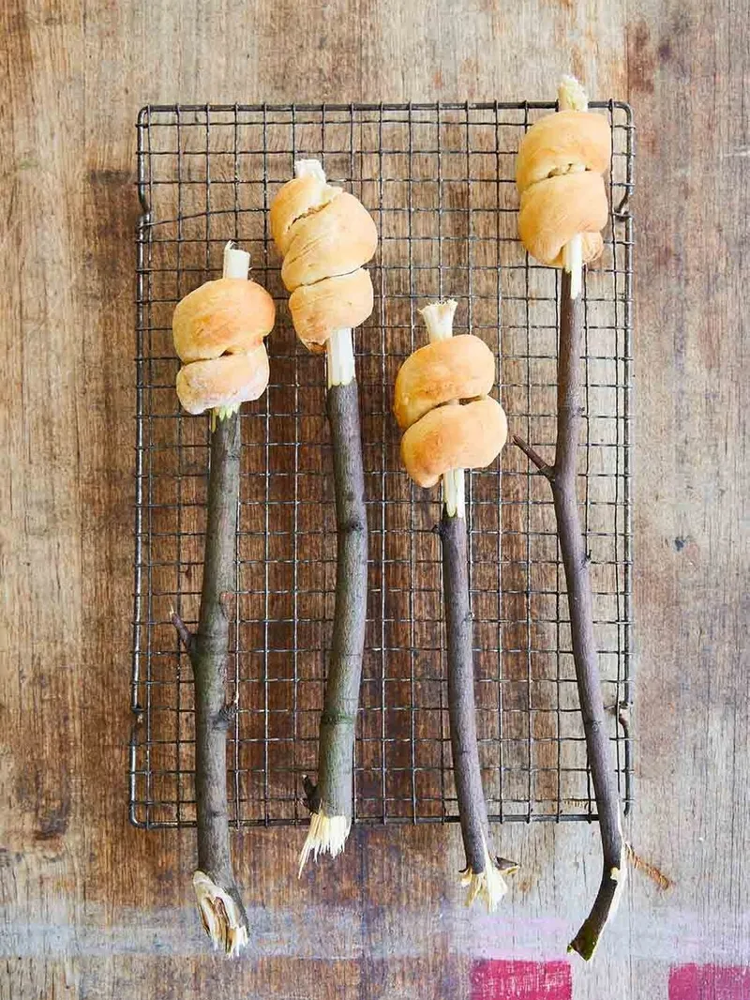

Campfire Bread by Jamie O.

Description:
“Cooking bread over a campfire is super-fun and really
easy! Just make sure you have an adult on hand to help
with some of the trickier bits. Once you’ve got this
method down, try experimenting with other flours –
wholewheat, rye or spelt would all work well.”
Ingredients:
- 100 g self-raising flour or gluten-free flour
- 4 tablespoons natural yoghurt
- 1 tablespoon olive oil
Method:
- Preheat your barbecue, creating an area of hot coals and a cooler area with no coals on the opposite side.
- Mix the flour with a little pinch of sea salt in a large bowl, add the yoghurt and the olive oil, and mix
together with your hands until you have a smooth dough.
- Cut the dough in half, then half again and roughly roll out each piece into a long sausage shape, using a
little flour if the dough feels sticky. Wrap the dough tightly around and around the end of a (clean!) stick,
until it looks like a little helter skelter. Pinch the end of the dough together so it’s nice and secure.
- Hold the stick about 15 to 20cm over the hot coals, toasting the dough as you would a marshmallow.
Cook the bread, turning every now and then, until golden on all sides. (This should take about 5 to 10 minutes.)
- Leave the bread to cool slightly, then break it off the stick and brush with a little olive oil or butter.
Tips / Easy Swaps
When cooking with kids, use your common sense to determine what jobs they can
help you with, depending on their age and skill level. It’s always good to start
small, with jobs such as mixing and measuring, then progress to elements of a recipe,
then go on to slightly trickier techniques over time. The more they cook, the better they’ll get.
Back to Main page or check out
Veggie Quesadillas or
Caramelized Pineapple Tartlets